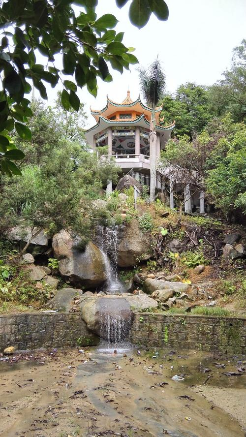
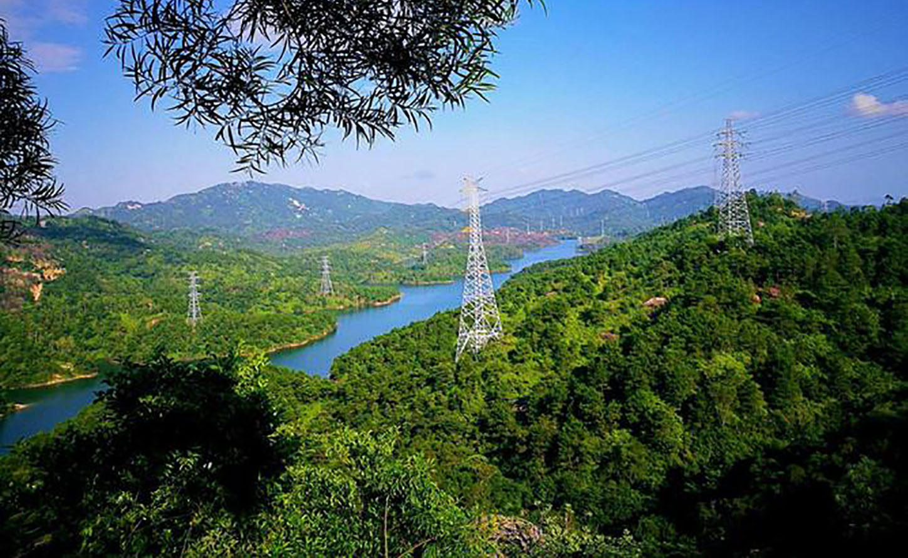
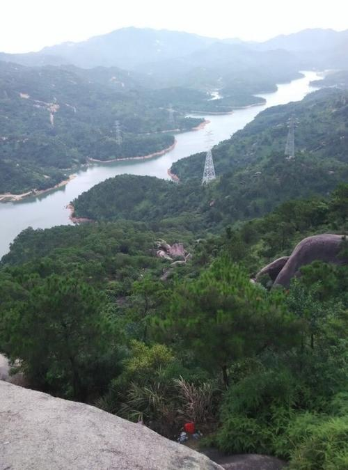
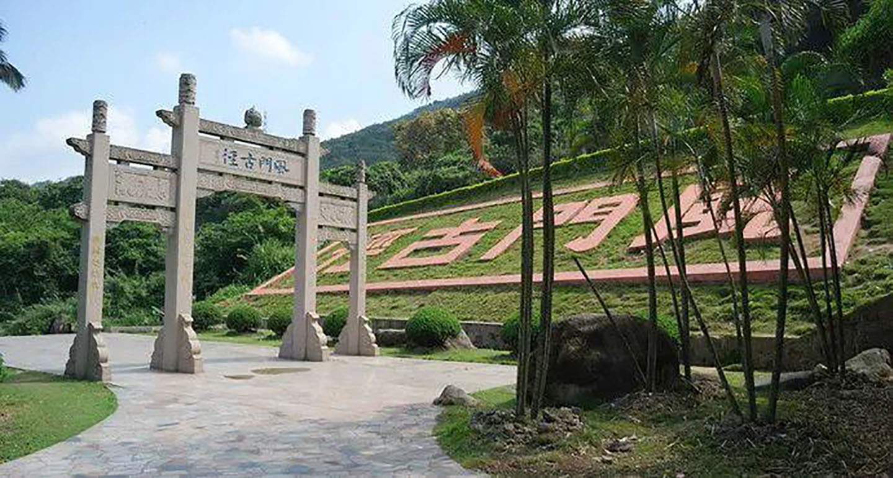
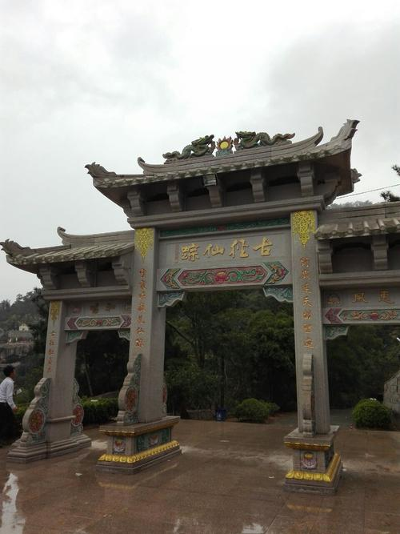

<div class="header"></div>
<input type="checkbox" class="openSidebarMenu" id="openSidebarMenu">
  <label for="openSidebarMenu" class="sidebarIconToggle">
    <div class="spinner diagonal part-1"></div>
    <div class="spinner horizontal"></div>
    <div class="spinner diagonal part-2"></div>
  </label>
  <div id="sidebarMenu">
    <ul class="sidebarMenuInner">
     <li><a href="../../期末/个人主页.html">个人主页</a></li>
    <a href="../../期末/个人信息.html"><li>个人信息</li></a>
    <li><a href="../../作品1/Ukraine.html">作品1</a></li>
    <li><a href="../首页.html">作品2</a></li>
    <li><a href="../../作品3/html/首页.html"S>作品3</a></li>
      <li><a href="../首页.html">首页</a></li>
      <li><a href="风景.html">风景</a></li>
      <li><a href="文化.html">文化</a></li>
    </ul>
  </div>
  <div id='center' class="main center">
    <div class="mainInner">
 
    </div>
<link href="../css/风门古径.css" rel="stylesheet" type="text/css">
<body background="../images/风门古径/u5066580951404321609&fm253&fmtauto&app138&fJPEG.jpeg">
<h1 style="position: absolute; left: 32px; top: 34px; width: 788px; color: #FFAE35; height: 318px; font-family: 隶书; font-size: 37px;" >&nbsp;&nbsp;风门古径是广东省揭阳市空港经济区炮台镇石牌村的一处自然风景区。内有风格独特的风门古庙，庙旁有六百多年树龄的古榕，枝叶满盖，老干参天。还有常年不竭、清洌甘甜的仙泉井。古庙、老榕、清泉、碑廊、石刻、龙柱......融汇成一体，形成一处优美的自然景观。<br><br>
近几年来，风门古径在各界的大力支持下，新建的石碑坊式山门，雄伟壮观，“风门古径”四个大字增添了山门的份量和气流。新筑的山道，婉转而平坦；此外尚有怀远亭、黄榕树及潺潺流泉，一直伴随着游客到古庙之前。</h1>
<a href="../images/风门古径/u369231733713059949&fm253&fmtauto&app138&fJPEG.jpeg" target="_blank"></a>
<a href="../images/风门古径/u8308506251026826296&fm253&fmtauto&app138&fJPEG.jpeg"target="_blank"></a>
<a href="../images/风门古径/u5857955713528181324&fm253&fmtauto&app138&fJPEG.jpeg"target="_blank"></a>
<a href="../images/风门古径/u5066580951404321609&fm253&fmtauto&app138&fJPEG.jpeg"target="_blank"></a><a href="../images/风门古径/u3343904346568607787&fm253&fmtauto&app138&fJPEG.jpeg"target="_blank"></a>